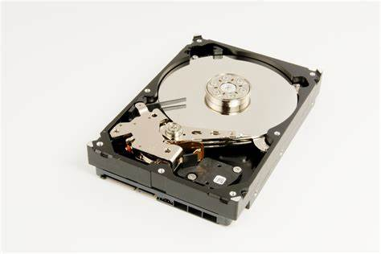

3.2.2 Almacenamiento
Un soporte o medio de almacenamiento de datos es aquel donde se puede almacenar todo tipo de información, resguardamos información en el disco duro. El software se conserva en la “Unidad C” O “Disco local C”, los datos se guardan en los Documentos. También podemos hacer uso de dispositivos de almacenamiento secundarios como: discos duros, CD, DVD, memorias USB.
Los dispositivos de almacenamiento secundarios pueden dañarse más fácilmente y lograr que perdamos nuestros datos, la información debe respaldarse. Una alternativa de respaldo es copiar nuestros archivos a otro dispositivo. Expertos recomiendan respaldar únicamente nuestros datos, copiar todo el contenido de documentos. La capacidad de almacenamiento se mide en bytes, MB, o TB. Necesitas respaldar la información con anterioridad y verificar el espacio requerido para almacenar. Para saberlo posiciona el cursor del ratón encima del elemento que deseas copiar y oprime el botón derecho, se desplegara un menú de opciones y selecciona la opción propiedades donde se abrirá una ventana que mostrara el tamaño del elemento, una vez conocida la capacidad de almacenamiento seleccionamos jun dispositivo adecuado.
CLASIFICACION Y FUNCIONAMIENTO DE LOS MEDIOS DE ALMACENAMIENTO
Los medios de almacenamiento se clasifican de acuerdo con sus propiedades, entre estos se encuentra el soporte magnético, incluye una cinta magnética y el disco duro, el soporte óptico como el CD, DBD, Blu-ray y el soporte de estado sólido donde encontramos la memoria USB, tarjeta de memoria y memory stick. El precio de los dispositivos es otro criterio que debemos tomar en cuenta al momento de elegir, ejemplo el DBD es la más económica. Otras alternativas como la nube, Dropbox, Google Drive, OneDrive o Mega ofrecen almacenamiento gratuito desde 2 GB hasta 50 GB.
CAPACIDAD DE ALMACENAMIENTO
Todos los elementos de las computadoras evolucionan continuamente. La ley Moore indica que cada 18 meses el número de transistores en un chip se duplica. Un transistor sirve para representar unos y ceros, que es lo que entiende una computadora. Si se duplican los transistores en un chip la computadora almacenara más ceros y unos, contara con mayor capacidad de almacenamiento. La capacidad de almacenamiento y de los medios de almacenamiento se mide en bytes que es el conjunto de ocho bits, un bit es un cero o uno. Las computadoras solo entienden ceros y unos, la letra A se almacena utilizando 01000001, existe una tabla que muestra las representaciones de los caracteres.
Una computadora emplea la memoria primaria (RAM) o secundaria para almacenar los datos y programas. Para medir la cantidad se utilizan unidades como kilobytes, megabytes, o terabytes. Las memorias RAM tiene una capacidad de almacenamiento de 2,4,6,8,16,24,32 o 64 Gigabytes, las memorias secundarias tienen capacidad de almacenamiento mayor, de 500, 600, 700 Gigabytes i de 1 Terabyte.
